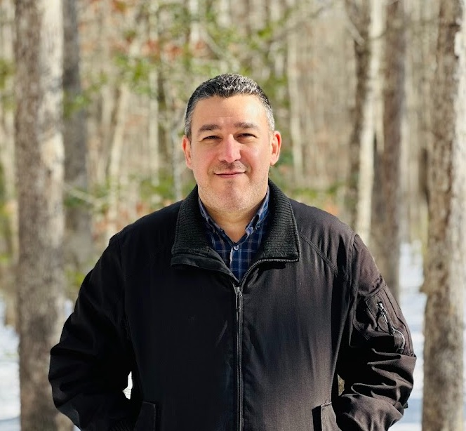

I hold a Ph.D. in Computer Science from Virginia Commonwealth University, where my research explored network science, machine learning, graph neural networks and their transformative applications in healthcare and systems biology.
With more than a decade of experience as a Senior Lecturer and Programmer, I have contributed to diverse software and research projects and published in respected journals and conferences. My work is driven by a deep passion for advancing precision medicine through innovative computational approaches.